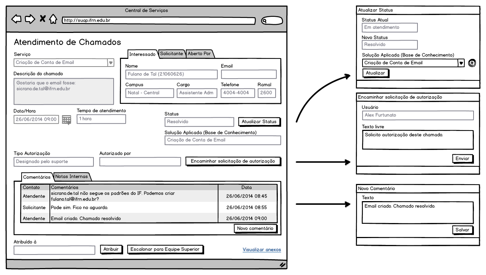

|
IFRN
COORDENAÇÃO DE SISTEMAS DE INFORMAÇÃO (COSINF)/DIGTI/RE
|
|||
|---|---|---|---|---|
PROCESSO DE SOFTWARE PARA A COSINF (COSINF-SUAP) |
||||
Especificação de Caso de Uso (ECU) |
||||
Nome do Projeto: |
Central de Serviços |
|||
UC300 - Atendimento de Chamados <v0.1>¶
Conteúdo
Histórico da Revisão¶
Data |
Versão |
Descrição |
Autor |
|---|---|---|---|
07/07/2014 |
0.1 |
Início do Documento |
Rafael Pinto |
Objetivo¶
Realizar o atendimento dos chamados dos usuários.
Atores¶
Principais¶
Suporte/Atendimento
Interessado¶
Pré-condições¶
Cadastro do chamado.
Pós-condições¶
Fluxo de Eventos¶
Fluxo Normal¶
FN1 – Encaminhar Solicitação de Autorização¶
O caso de uso é iniciado selecionando a opção
Central de Serviços>ChamadosO sistema apresenta uma listagem de chamados, com opções de pesquisa por: ID, período, status, grupo de atendimento, atribuições (a quem está atribuído)
O ator seleciona a opção
Encaminhar Solicitação de AutorizaçãoNa tela
Encaminhar Solicitação de Autorizaçãoo ator preenche o campoTexto Livre, com alguma informação adicional, caso desejeO ator finaliza o caso de uso selecionando a opção
Enviar
FN2 – Adicionar Comentário¶
O caso de uso é iniciado selecionando a opção
Central de Serviços>ChamadosO sistema apresenta uma listagem de chamados, com opções de pesquisa por: ID, período, status, grupo de atendimento, atribuições (a quem está atribuído)
O ator seleciona algum chamado, visualizando seus detalhes
O ator clica no botão
Adicionar ComentárioNa tela
Adicionar Comentárioo ator preenche o campoTextoO ator finaliza o caso de uso selecionando a opção
Salvar
FN3 – Adicionar Nota Interna¶
O caso de uso é iniciado selecionando a opção
Central de Serviços>ChamadosO sistema apresenta uma listagem de chamados, com opções de pesquisa por: ID, período, status, grupo de atendimento, atribuições (a quem está atribuído)
O ator seleciona algum chamado, visualizando seus detalhes
O ator clica no botão
Adicionar Nota InternaNa tela
Adicionar Nota Internao ator preenche o campoTextoO ator finaliza o caso de uso selecionando a opção
Salvar
FN4 – Assumir Chamado¶
O caso de uso é iniciado selecionando a opção
Central de Serviços>ChamadosO sistema apresenta uma listagem de chamados, com opções de pesquisa por: ID, período, status, grupo de atendimento, atribuições (a quem está atribuído)
O ator clica no botão
AssumirA atribuição é realizada e a listagem de chamados é atualizada com o nome do Ator na coluna de atribuição
FN5 – Escalar Chamado¶
O caso de uso é iniciado selecionando a opção
Central de Serviços>ChamadosO sistema apresenta uma listagem de chamados, com opções de pesquisa por: ID, período, status, grupo de atendimento, atribuições (a quem está atribuído)
O ator clica no botão
Escalardo referido chamadoO chamado é direcionado para o nível de atendimento imediatamente superior, o campo
Atribuído Paratorna-se vazio (disponível para nova atribuição)A listagem de chamados é atualizada com as informações do chamado escalado
FN6 – Retornar Chamado¶
O caso de uso é iniciado selecionando a opção
Central de Serviços>ChamadosO sistema apresenta uma listagem de chamados, com opções de pesquisa por: ID, período, status, grupo de atendimento, atribuições (a quem está atribuído)
O ator clica no botão
Retornardo referido chamadoO chamado é direcionado para o nível de atendimento imediatamente inferior, o campo
Atribuído Paratorna-se vazio (disponível para nova atribuição)A listagem de chamados é atualizada com as informações do chamado escalado
FN7 – Atribuir Chamado¶
O caso de uso é iniciado selecionando a opção
Central de Serviços>ChamadosO sistema apresenta uma listagem de chamados, com opções de pesquisa por: ID, período, status, grupo de atendimento, atribuições (a quem está atribuído)
O ator clica no botão
AtribuirNa tela
Atribuir Chamadoo ator preenche o campoAtribuído paraO ator finaliza o caso de uso selecionando a opção
Salvarregistrando para quem o chamado está sendo atribuído
FN8 – Atualizar Status¶
O caso de uso é iniciado selecionando a opção
Central de Serviços>AtendimentoO sistema apresenta uma listagem de chamados, com opções de pesquisa por: ID, período, status, grupo de atendimento, atribuições (a quem está atribuído)
O ator seleciona algum chamado, visualizando seus detalhes
O ator clica no botão
Alterar para <status>O status é atualizado
Especificação suplementares¶
Requisitos Não-Funcionais¶
Não há.
Requisitos de Interface¶
Não há.
Requisitos de Informação¶
RIN01 – Campos para listagem de chamados¶
Opções |
Serviço |
Em Nome De |
Requisitante |
Atribuído a |
Aberto Em |
Tempo Restante |
Status |
Autorizado |
|||
|---|---|---|---|---|---|---|---|---|---|---|---|
Ordenação |
Não |
Sim |
Sim |
Sim |
Sim |
Sim |
Não |
Não |
Não |
||
Filtro |
Não |
Sim |
Sim |
Sim |
Sim |
Não |
Não |
Não |
Não |
||
Busca |
Não |
Não |
Não |
Não |
Não |
Não |
Não |
Não |
Não |
||
Observações |
|
RIN02 – Campos para Atendimento do Chamado¶
Informação |
Tipo |
Tamanho |
Valor Inicial |
Domínio |
Máscara |
|||||||||
|---|---|---|---|---|---|---|---|---|---|---|---|---|---|---|
Serviço |
Texto (Desabilitado) |
|||||||||||||
Em Nome De |
Texto (Desabilitado) |
|||||||||||||
Requisitante |
Texto (Desabilitado) |
|||||||||||||
Email do Requisitante |
Texto (Desabilitado) |
|||||||||||||
Campus do Requisitante |
Texto (Desabilitado) |
|||||||||||||
Cargo do Requisitante |
Texto (Desabilitado) |
|||||||||||||
Telefone do Requisitante |
Texto (Desabilitado) |
|||||||||||||
Ramal do Requisitante |
Texto (Desabilitado) |
|||||||||||||
Data/Hora de Abertura |
Data/Hora (Desabilitado) |
|||||||||||||
Tempo de Atendimento |
Texto (Desabilitado) |
|||||||||||||
Status do Chamado |
Texto (Desabilitado) |
|||||||||||||
Solução Aplicada |
Texto (Desabilitado) |
|||||||||||||
Tipo Autorização |
Texto (Desabilitado) |
|
||||||||||||
Autorizado Por |
Texto (Desabilitado) |
|||||||||||||
Atribuído à |
Texto (Desabilitado) |
|||||||||||||
Comentários |
Tabela |
|
||||||||||||
Notas Internas |
Tabela |
|
||||||||||||
Log de Operações |
Tabela |
|
Regras de Negócio¶
Regra |
Descrição / Mensagem |
|---|---|
RN01 |
Ao atualizar o status do chamado para “Resolvido”, o usuário deverá informar a solução aplicada utilizando a “Base de Conhecimento”. Sempre que o status for atualizado, deverá ser enviado um email ao interessado informando o ocorrido.
|
RN02 |
Ao adicionar um “Comentário”, deverá ser enviado um email informando o fato ao destinatário interessado (caso seja um comentário do atendente) ou ao atendente (caso seja um comentário do interessado).
|
RN03 |
A listagem de “Comentário” ou “Nota Interna”, deverá ser ordenada por data (decrescente).
|
RN04 |
Apenas o responsável pelo Suporte (cadastrado no grupo de atendimento), poderá atribuir um chamado a determinado Atendente do Suporte.
|
RN05 |
Apenas poderá manipular o Chamado aberto, o Atendente do Suporte cujo chamado está atribuído.
|
RN06 |
Ao atribuir um chamado, o atendente deverá receber um email com a notificação da atribuição.
|
RN07 |
Ao escalar um chamado (para um nível superior), deverá ficar registrado (histórico), a quais grupos de atendimento o chamado foi atribuído, bem como data/hora, quem atribuiu. Ao Escalar, o chamado ‘sobe’ de nível, mas não fica atribuído a nenhum atendente.
|
RN08 |
Ao retornar um chamado (para um nível inferior), deverá ficar registrado (histórico), a quais grupos de atendimento o chamado foi atribuído, bem como data/hora, quem atribuiu. Ao Escalar, o chamado ‘sobe’ de nível, mas não fica atribuído a nenhum atendente.
|
Mensagens¶
Não há.
Ponto de Extensão¶
Não há.
Questões em Aberto¶
Não há.
Esboço de Protótipo¶
Tela de cadastro de serviços¶
Diagrama de domínio do caso de uso¶
Não há.
Diagrama de Fluxo de Operação¶
Não há.
Cenário de Testes¶
Nota
Falta construir os cenários de teste.